Projects
Contact me for full presentations.
University of Alabama at Birmingham Libraries
Florida State University Libraries


Ensuring a User-Friendly Catalog Experience: A Comprehensive Guide to a Primo VE Audit

This presentation was given on June 20, 2025 at Ex Libris Users of North America (ELUNA) Conference. It detailed my team and I's process of performing an internal Primo VE audit which was conducted to ensure the discovery platform is reliable, optimized, relevant, and user-friendly for library patrons.
Catalog Error Reporting: Simplifying the Process
This presentation was given on June 20, 2025 at Ex Libris Users of North America (ELUNA) Conference. It outlined my project to configure and embed an error reporting form in Primo VE so that library patrons and internal library personnel can report errors in the catalog with ease.
Bridging the Gap: Navigating the Landscape of Multiple Implementations
This presentation was given on May 17, 2024 at the Ex Libris Users of North America (ELUNA) Conference. It was given by Kevin Hebert, Danielle Hassan, Aaron Pahl, and myself. The presentation detailed our process of handling multiple implementations of Alma Digital & Library Mobile at one time as a Systems department.
UAB Library Mobile App Demo

This presentation was given on December 14th, 15th, and 19th of 2023. It was meant to demonstrate the new UAB Library Mobile Application to internal library personnel.
E-Collections in Alma & Primo VE

E-Collections in Alma & Primo VE was a presentation given during UAB TechTalks January 17, 2023. It was meant to inform library workers how electronic resources are managed in Ex Libris Alma and Primo VE for library patrons.
E-Resource Usage Statistics During Covid-19

This presentation was shown in front of the Scholarly Support Network at FSU Libraries in 2021. The occasion was meant to inform library faculty and staff why usage statistics are important and how they were affected by the COVID-19 pandemic during 2020.
Film Reviews
Shishova, Anna. Review of "The New Greatness Case" by Beth Hall. EMRO, 02/29/2024.
Chait, Melanie. Review of "Dance Me to the End of Time" by Beth Hall. EMRO, 07/18/2024.
Wortzel, Sasha. Review of "How to Carry Water" by Beth Hall. EMRO. 07/18/2024.
Princigalli, Giovanna. Review of "Song of Aida" by Beth Hall. EMRO. 07/18/2024.
Capai, Eliza. Review of "Incompatible with Life" by Beth Hall. EMRO. 10/31/2024.
Kirschenbaum, Scott. Review of "The Last Ecstatic Days" by Beth Hall. EMRO. 10/31/2024.
Alluna, Lin. Review of "Twice Colonized" by Beth Hall. EMRO. 10/31/2024.
Usability Testing Team Lead: Library Mobile
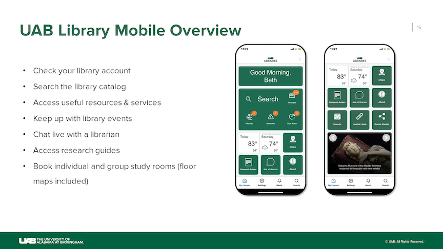UAB Library Mobile is an application that was implemented in 2023 by my team and myself. The app provides access to library services on the go.
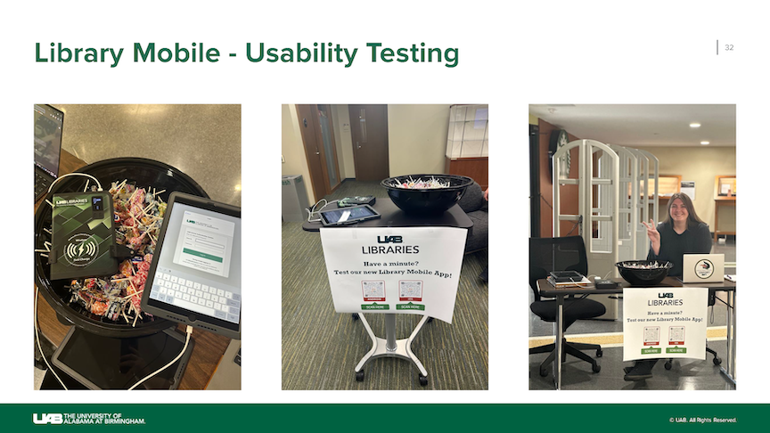In-person usability testing was conducted after the app was launched to the public. Candy incentives were provided for patrons who downloaded the app on their mobile device and followed a set of instructions meant to determine the app's ease of use. If patrons did not want to download the app, I provided library-owned iPads with the app alrrady set up for them.
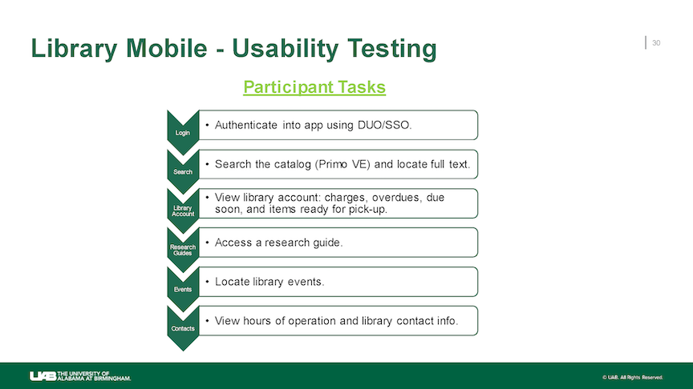Participants were given a set of tasks to complete meant to assess if patrons could authenticate themselves into the app using DUO/SSO, if they could search the catalog in-app, view their personal library account, access research guides, locate library events, and view library hours of operation and contact information.
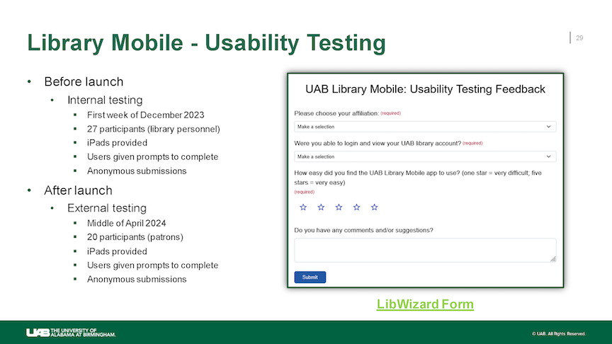An online form was also distributed to active app users and internal library personnel to receive user feedback. The survey was anonymous and made with SpringShare LibWizard Forms.
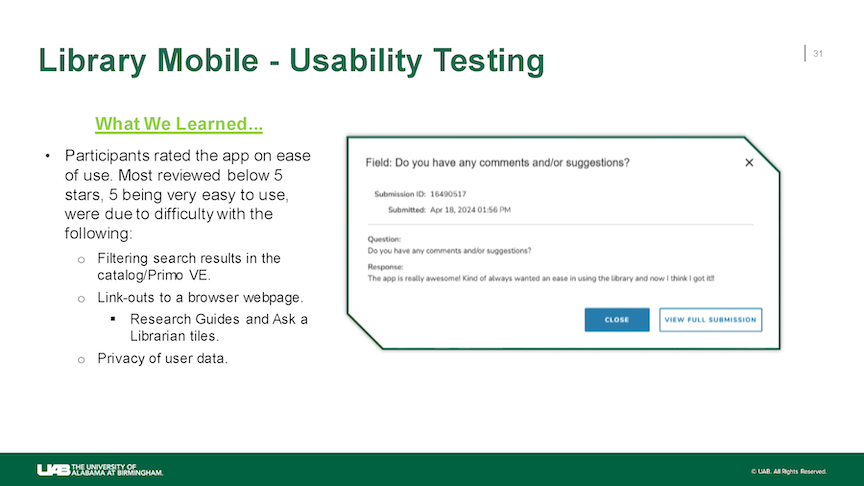Overall users found the app to be easy to use and contained useful information.
System Audit Team Lead: Primo VE
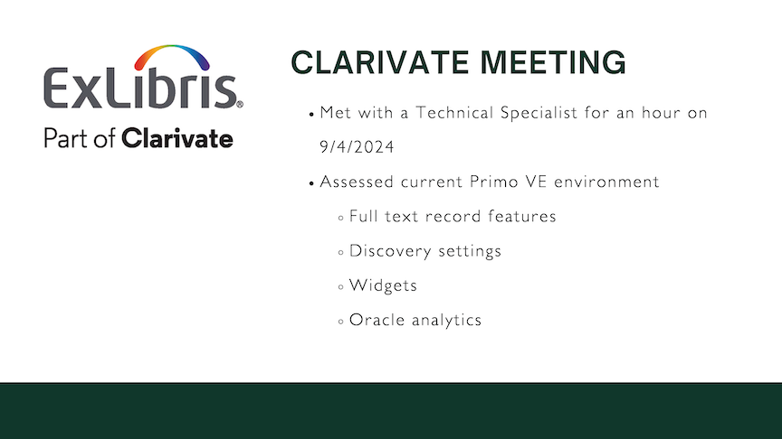Our team met with a technical specialist from Clarivate, the owners of our catalog system Primo VE, to assess our current Primo VE environment.
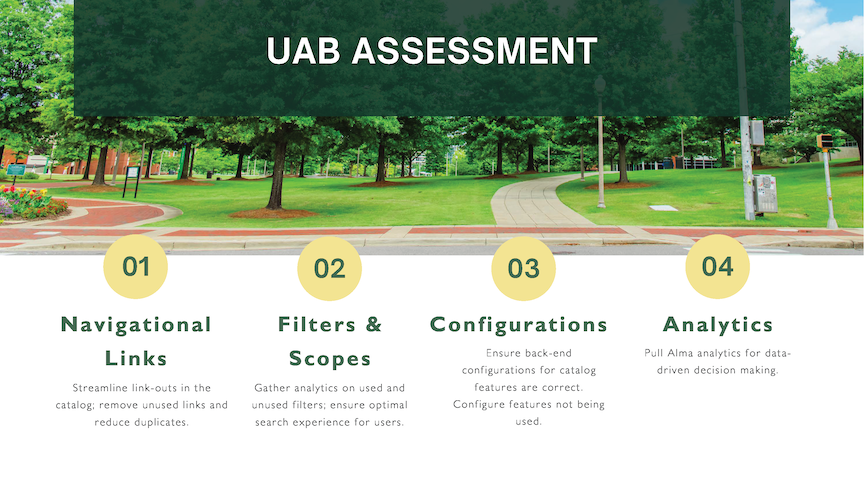After meeting with Clarivate, our department started our own assessment. Areas in the catalog we paid attention to were navigational links, filters and scopes, discovery configurations, and catalog-use analytics using Oracle.
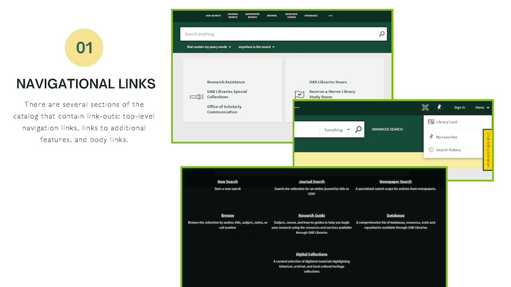Navigational links included top-level navigation, including service menu links, and catalog body links.

I made and printed out an information heirarchy chart that detailed all filters and subfilters in our catalog. I hung it up in my office where I could write notes and visually assess areas of improvement.
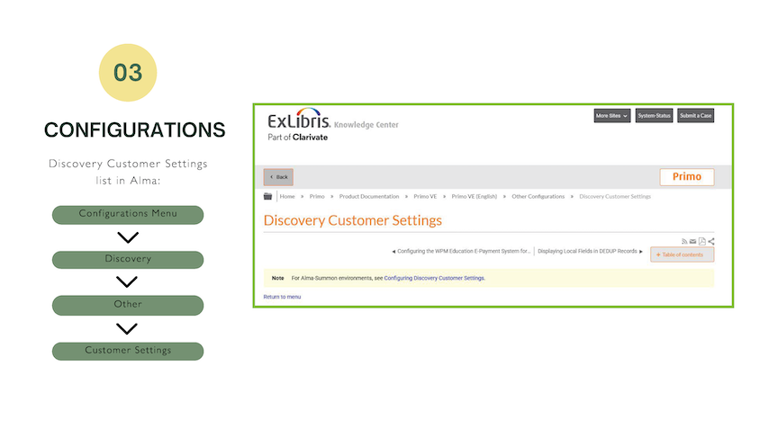In Alma, the back-end of Primo VE, there are a set of discovery configurations that can be activated or deactivated. Clarivate offers documentation that outlines each configuration setting and what it does. We read through this documentation and assessed based on needs of our user population.
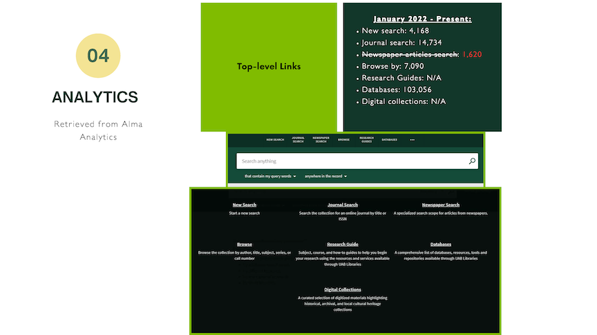Oracle analytics were generated within a year time frame to see which links are used the most. One link from the top-level navigation was removed due to very low use.
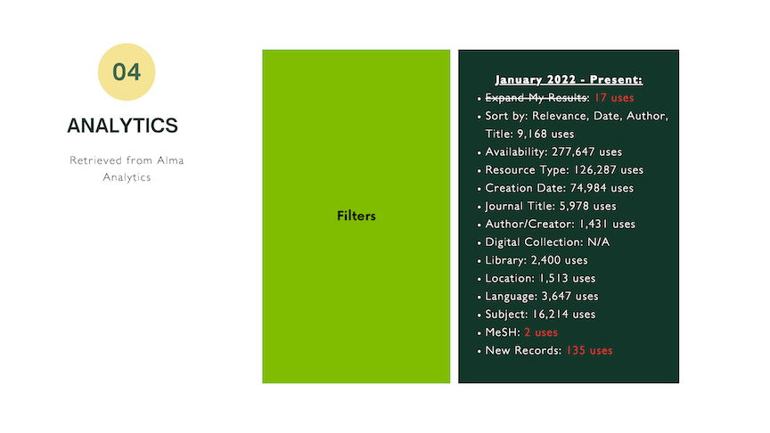Further analytics were pulled to see which filters and search scopes were being used. Although there were a total of 3 filters that had extremely low use, only was was removed. The additional two were kept because they made sense for our user population.